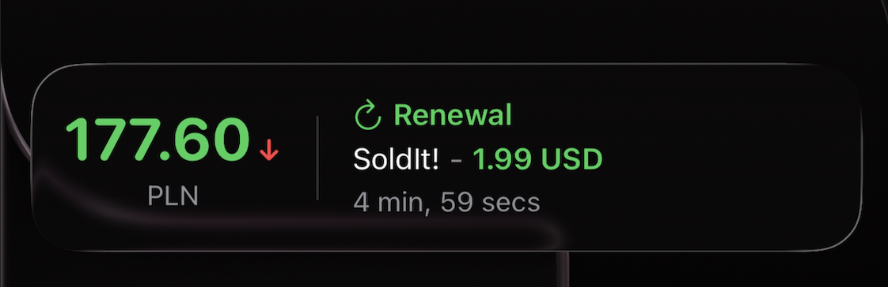

How to monitor iOS app revenue on your Lock Screen
During a launch, a running total can be easier to follow than a banner for every renewal. Once Apple is sending your app’s purchase events to SoldIt!, a Live Activity can show today’s estimated earnings on your iPhone Lock Screen.
Show earnings in your currency
- In SoldIt!, open Settings. Under Display Mode, select Earnings. Choose Display Currency to set the currency used for your estimate.
- Open Notifications in SoldIt! settings, turn on Live Activity, and tap Save. Leave Live Activity Sound off if you want silent updates.
- Lock your iPhone and wake the screen. As SoldIt! receives new sales, the active Live Activity updates. On iPhones with Dynamic Island, you can also see the activity while using another app.

Read the daily total
Earnings shows an estimate based on the purchase events SoldIt! receives. Use Apple’s financial reports when you need the amount Apple will pay out. To follow how many units you’ve sold during a promotion, switch Display Mode to Sold Units.
If the activity is missing
Open SoldIt! on your iPhone and check that your connected app shows recent activity. If sales appear in the app, check that iOS allows Live Activities for SoldIt! in the iPhone’s Settings app. If the Lock Screen shows a count when you expected a currency amount, check the display mode in SoldIt!.